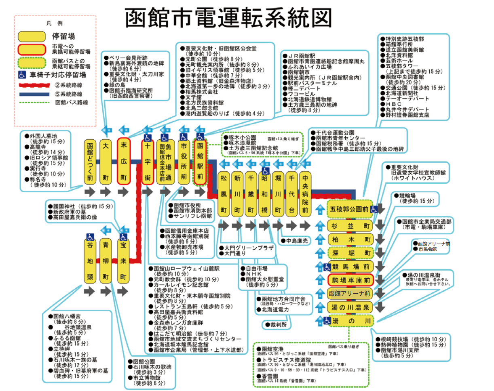

函館市電
函館市電運転系統図
スマホで楽々ルート検索 『函館ＮＡＶＩ』
目的地を入力するだけで現在地（または指定場所）から市電などの公共交通機関を利用した経路，
所要時間，料金がわかる便利なiOS・Androidアプリです。
ほかにも観光に便利な情報なども網羅されていますので，是非，ご利用ください。
スマホの言語にあわせ，日本語，英語，中国語（繁体字・簡体字），韓国語の５言語の表示に対応しています。
ご利用にあたっては，「函館ＮＡＶＩ」のページをご覧ください。
函館市電・函館バス １日・２日乗車券
市電車内でも販売しておりますので,ご乗車の際にお買い求めください。
また、沿線には１日・２日乗車券を提示すると割引などの特典が受けられる
見学施設
レストラン・土産物店などが多数あります。詳しくは、協力店ご案内に記載されております。
函館市電・函館バス観光用マップ（イカすマップ）
ICASMAP1 CASMAP２
※印刷用データは３分割になっています。
ICASMAP１－１ ICASMAP１－２ ICASMAP１－３
ICASMAP２－１ ICASMAP２－２ ICASMAP２－３
１日・２日乗車券協力店一覧
協力店ご案内